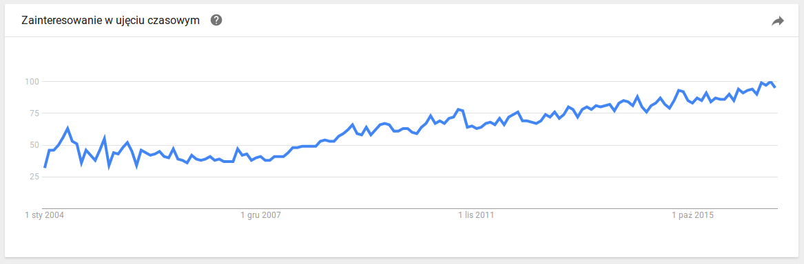
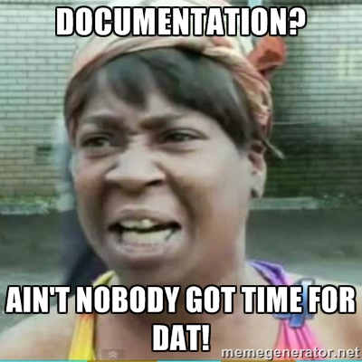
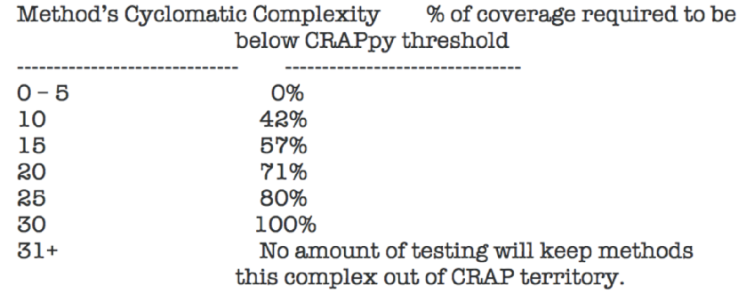

The Art of Quality Maintenance
$ whoami
$ whoami
www: coditsu.io
www: mensfeld.pl
twitter: @maciejmensfeld
e-mail: maciej@coditsu.io
Abstract
- What is
codequality - Why even care?
- Characteristics of code quality
- Misconceptions and traps
- Building quality
- Is failing an option?
What is code quality?
What is code quality?
Everyone speaks about it.
What is code quality?
Everyone wants to make have it.
What is code quality?
But do people even think about its nature?

Zen and the Art of Motorcycle Maintenance
Robert M. Pirsig
Care and Quality are internal and external aspects of the same thing. A person who sees Quality and feels it as he works is a person who cares.A person who cares about what he sees and does is a person who’s bound to have some characteristic of quality.
Robert M. Pirsig
Why even care?
Programs must be written for people to read, and only incidentally for machines to execute.
Harold Abelson - Structure and Interpretation of Computer Programs


Broken window theory
- Study shows broken windows lead to vandalism.
- Code that no one cares gets crapier with time.
- Fix broken things, while working with them.
Expensive mistakes
Toyota 2009 Lexus car recall - $3 billion

Expensive mistakes
Knight Capital Group's trading violations - $440 milion

Expensive mistakes
Citigroup vs US Securities and Exchange Commission - $7 mln

Expensive mistakes
Ariane 5 failure - $370 milion

Expensive mistakes
Therac-25 - people's lifes

Quality software market in 2015
Market size: USD 5.96 billion
IT and Telecom: USD 535 million
 http://www.grandviewresearch.com/industry-analysis/quality-management-software-market
http://www.grandviewresearch.com/industry-analysis/quality-management-software-market
http://www.idc.com/getdoc.jsp?containerId=US40915816
Hype?
Characteristics of code quality
Characteristics of code quality
- Coverage
- Complexity
- Documentation
- Duplication
- Size
- Structure
- Patterns
- Code smells
Something's not right, when you have:
- Unnecessary complexity
- Useless/misleading comments
- Long classes
- Poor naming
- Code that’s not used
- Design Pattern overuse
- Tight coupling
There is no silver bullet
But there are more and more good practices worth following.
Misconceptions and traps
Coverage

Complexity
It may be a result of the project methodology used.
It does not indicate degree of defects.
Documentation
Lots of comments are written to cover up bad code.
Documentation separated from code is bad.
It does not say why but it tells how.
Almost no one measures its quality.
Duplication
Methods contain (business) logic, and sometimes you'll want to change the logic for every caller, sometimes not?
Size
How small is small?
LOC is a really, really wrong metric
Structure
It may be more important than the code details.
Patterns
People change habbits.
People change jobs.
Jobs change people.
Everything needs a context
Offenses? Bad? Good?

Who knows without context?

We don't work in isolation

Building quality
Is it hard?
Not if you have the right attitudes. It's having the right attitude that's hard.
Robert M. Pirsig
Don't rush things
When you want to hurry something, that means you no longer care about it and want to get on to other things.
Robert M. Pirsig
Don't rush things
Act in haste and repent at leisure: Code too soon and debug forever
Raymond Kennington
Raise awareness of quality
Caring about what you are doing is considered either unimportant or taken for granted.
Robert M. Pirsig

Keep an eye on it
- Indicates code that needs refactoring
- Indicates code that needs redesign
- VACUUM frequently
Keep an eye on it
- Start early
- Don't compromise
- Always schedule time for quality maintenance
- Take collective ownership
Documentation
- Do it!
- Use a single standard for a given language / technology.
- Say why instead of how.
- If you copy and paste, check if comments are still relevant.
Documentation
- Document unique, special, or unexpected conditions.
- Keep an eye for stale comments.
- Justify violation of good programming practices.
- If everyone stumbles on a particular problem, fix it!
Fail fast
- Raise exceptions so they’re in your face.
- Don't ignore or hide them.
- If it is hard to track problems in development, imagine doing that in production.
- Don't modify exception stack (or type).
Focus your (git) effort
Don't fix it, if it works.
Don't fix it, if it does not require any changes.
Perform code review.
C.R.A.P metrics (Change Risk Analysis and Prediction)
CRAP(m) = comp(m)^2 * (1-cov(m)/100)^3 + comp(m)
C.R.A.P metrics (Change Risk Analysis and Prediction)
The best code is no code
Outsource things that are not your business.
- Payments
- Deployment
- Infrastructure
- File storage
Then, why not do the same with quality?

Your project repositories contain way more knowledge than the current code base
2 years / 5 people project can generate 5-10 GB of metadata to work with.
Focus your code review on business logic
Make machines do the rest.
Add context and remember that:
- We’re humans, we make mistakes, we learn (but measure it).
- Interpret data, don't follow it blindly.
- Don't aim for the "magical" quality - instead track the technical debt.
What if we fail?
Government will regulate things for us.
Government will regulate things for us
Like they did with many other industries.
What if we fail?
We're still an emerging industry with more and more complexity.
We need to be able to prove that we know what we are doing.
Keep track, stay sharp
www: coditsu.io
www: mensfeld.pl
twitter: @maciejmensfeld
e-mail: maciej@coditsu.io
THE END - Q & A
Extras
- Untested code == unfinished code
- Expose metrics and stats
- Don’t tolerate anyone trashing your code
- Use tools to check code quality.
- Do it constantly.
- Do it even when code does not change.
Extras
- Don't ignore warnings.
- Warnings may hide bigger problems.
- Always justify supressions.
- SRP.
- Postpone generalization.
- Don't overthink.
- Less code, less problems
Extras
- Don't make your senior developers code.
- Make them teach a bit (if they want to).
- Rotate responsibilities.
- Challenge your programmers.